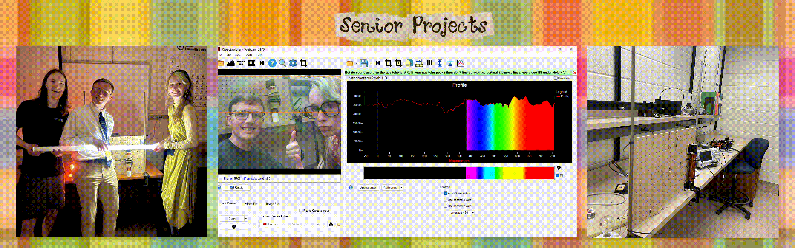

aubrianne e. thoms

“If you wish to make an apple pie from scratch, you must first invent the universe.
-Carl Sagan

from the center of the universe to the space coast
Hello! My name is Aubrianne (Aubrie) Thoms, and I am currently a graduate student studying for my master's degree in space science at the Florida Institute of Technology. I recieved my Bachelor's of Science in 2025 from Randolph-Macon College, where I majored in physics and minored in astrophysics, mathematics, and asian studies. Born and raised in a small county in Virginia called King George, I spent most of my childhood playing alongside the banks of the Potomac River. My curiosity for nature was nurtured there, where I would collect and identify animal bones, tree leaves, rocks, and whatever else I could get my little sticky fingers on. These days I still get my hands dirty, but it is a smidge less so from beach sand and much more from tinkering with equipment.

Randolph-Macon College is a quiet little train town in Ashland, Virginia, where I spent four years bouncing between a multitude of classes, extracurriculars, and campus jobs. Some of my most memorable classes include topics such as death and memorialization, the history of mathematics (truthfully I really struggled in this one, Babylonian long division is much more counterintuitive than you would expect), and the relationship of the depiction of food in art with American politics. My position in student government as VP of External Relations countenanced a moment to hold my bagged blood to donate to the American Red Cross, in addition to other unforgettable happenstances such as volunteering to sink in the camptown festival dunk tank. While I was VP of the R-MC Society of Physics Students chapter, we would perform fun demos in our vacuum chamber at the expense of myriad marshmellow peeps. Between my daytime gig at the EDGE career center and starry nights spent at the observatory public viewings, I was playing instruments (oboe, clarinet, guitar), building theatre sets, or meditating depending on the semester! So many cherished memories were made with exceptional people during my time there.

Presently, I reside on the space coast in Melbourne, Florida. Exoplanets remain my primary research interest, although I pivoted away from the observational side. Computational planetary modeling is my focus, as I use 3-dimensional circulation models to poke and prod at different habitibility considerations influenced by exoplanet atmospheres. I am a member of the Ortega observatory outside of class, where I participate on the social media and weather station teams. Ortega is definitely one of the biggest highlights of my time at Florida Tech! Lots of neat opportunities are facilitated by them; take setting up telescopes on the lawn of the Kennedy Space Center for instance. Whenever I'm not occupied by classes, research, etc., my free time consists of an array of interests (I'm a big movie geek and enjoy seeing films in theater!), eating tirimisu on the beach with friends, and watching the occasional rocket launch.

Although I'm a bit of a mad scientist, I have an artsy fartsy side to me! I read books (horror/gothic and popular science are my favorite genres), sketch, collage (e.g., the background to this webpage---it's made from old APS magazines), play instruments, and sew/tailor clothes. Additionally, I attempt to get my daily dose of exercise in by going to the gym, nature walks, yoga, pickleball, or rollerskating (whenever the weather permits).

Music is my livelihood! I jam out to Fall Out Boy, Sparks, N.E.R.D., Justice, just to name a few. My last concert was Hayley Williams out in West Palm Beach, but over the years I have also watched The Garden, Ghost, TWRP, Electric Six, and Muse live too. Not to brag: I've crowdsurfed once!

I am anything but a homebody...traveling, whenever I have the chance, is possibly my favorite pastime! From strange exhibits at museums (the VA science museum had one for poison in wildlife and uses thoughout history!) to iconic natural landmarks (e.g., my beloved everglades), I can never turn down the option of seeing somewhere new.
she blinded me with science

Pictured above is Keeble's halloween event in 2024! I painted a cardboard stand for people to take pictures with for our instagram page. We decorated the entire observatory in fake spider cobwebs for our event!!

For two years, I was the lead senior student observatory assistant at Keeble Observatory at R-MC. My responsibilities comprised of organizing public viewings, operating the main telescope, and frequently updating the social media. I also drew some stickers to pass out at our open houses! Our events were always fun, as we sometimes would hold paint nights, or provide hot cider, cake, snacks, etc., depending on the occasion.

Keeble visitors would leave the sweetest notes. One time a camera crew drew out a little thank you when they stopped by to film the observatory for R-MC's new advertisement. It was a pleasure to work at Keeble and meet people from all over!

The Ortega observatory in Melbourne, Florida, does a lot of outreach with different groups of students, ranging from homeschoolers to those living outside the country. Another notable aspect of Ortega is its partnership with the Kennedy Space Center. A handful of times throughout the semester, several of the members will go to the visitor complex to partake in tabling, conferences, setting up telescopes for public viewings, and more. Kennedy Under the Stars is one of these events: we traveled to the visitor complex to set up a few of the telescopes for visitors to gaze through!
caution! space nerds at work

Research Interests
- Exoplanets
- Planetary Habitability
- Atmospheres
- Storm Climatology and Meteorology
- Aerosols
- Computational Modeling
- Telescope Operation
- Data Visualization
Previously, I was using the aerosol module of a 3-dimensional general circulation to investigate the behavior of dust in tidally-locked exoplanet atmospheres and its implication for habitability. I have segued to using the storm climatology extension instead to evaluate the feasibility for cyclogenesis on a tidally-locked terrestrial exoplanet. That's all I can say for now, the rest is a secret until I finish my thesis!

I have worked in an autonomous robotics lab since I began at Florida Tech. Our first goal was to meddle with the NASA astrobee software and simulation, which now has evolved towards finetuning a node for camera localization. The first camera at my disposal was a RealSense D455, which I performed calibration and camera intrinsics using the software Kalibr. Now, I am using a USB camera to align the position and orientation quantities between two Apriltag detectors. My time in the lab has permitted me to:
- learn how to use Ubuntu/Linux
- understand more about computer systems in general (i.e., setting up a dual-boot system)
- familiarize myself with other programming languages (e.g., C and C++)
- navigate ROS 1 and other robotics software (e.g., Kalibr, Gazebo, Rviz)
- operate a RealSense D455 and USB camera
- acknowledge and master robotics fundamentals, such as what camera instrinsics versus extrinsics are, how to convert quaternions to euler angles, and how to use Apriltags

During the last semester of my physics major, I took two classes: physics seminar (capstone) and advanced physics laboratory. This was, in actuality, near the end of my junior year since I finished up my major in three years, but I refer to these experiments as "senior" projects since they finalized my physics studies. We debated topical scientific topics, created introductory lesson plans, and executed a group project. This group project allowed us to build a tesla coil and perform spectroscopic analysis of the topload as it interacted with 1) the air and 2) salt. My role was to operate the RSpec Explorer---a tabletop spectroscope---alongside its software and identify the spectral lines produced from the topload sparks. As for my advanced physics lab, we each were assigned an experiment to conduct. I was designated the spectrometer. My goal was to examine the spectral lines of various gas discharge lamps and calculate the wavelength, rydberg constant, and index of refraction depending on the element and grating. The other labmates took turns gathering data for my project (and vice versa with theirs) and relayed their numbers to me. From both of these experiences, I acquired:
- an understanding of crafting a lecture
- management skills for different lab equipment---especially for spectroscopic purposes
- scientific reasoning and writing skills
- a grasp on collaborating with peers
- methods for engaging with scientific literature and debate
- book-keeping/organization with experiments
Exoplanet Lecture: Lecture Outline, Assignment,Powerpoint
Tesla Coil: Final Paper
Spectroscopy: Final Paper, Powerpoint

Succeeding my SURF internship, I continued my exoplanet research throughout the 2023-2024 academic year in collaboration with the GEMS (Giant Exoplanets Around M-dwarf Stars). My objective was to create light curves of TESS exoplanet candidates from Keeble observatory's ground-based observations. From this collaboration, I established an understanding for:
- why small M-dwarf stars with large, jupiter-sized planetary companions challenge planetary formation regimes (i.e., core accretion theory)
- how to refine my imaging strategies by identifying the telescope's idiosyncrasies
- ways to improve my data visualization techniques to contribute streamlined/clean light curves (e.g., understanding what neighboring stars work best for differential photometry)
- the importance of collaboration in science
- what makes a light curve viable for planetary confirmation and publication
GEMS: Poster
internships

I completed my Research Experience for Undergraduates internship, funded by the National Science Foundation, at the University of Rio Grande Valley in Brownsville, Texas. This REU had a STEAM (science, technology, engineering, art, and math) initiative, meaning the cohort was a hybrid of astrophysicists and artists! Some of the best memories were made on our trips, such as the NASA Johnson Visitor Center and Nuevo Progreso, Mexico. My project was to analyze optical gamma-ray burst data from the Dr. Cristina V. Torres Memorial Astronomical Observatory using a pipeline created by Dr. Mario Diaz's research group. I developed skills during these nine weeks in:
- familiarization with a new telescope apparatus
- learning the process for following-up a GCN circular notice
- asking questions and discussing important ideas regarding Dr. Mario Diaz's The Sound of the Cosmos at his book club meetings
- deciphering a series of python scripts which calibrate the images, obtain the limiting distance, and a light curve
- understanding gravitational wave and gamma-ray burst fundamental concepts
- cross-matching stellar catalogs in DS9
UTRGV: Poster

The Schapiro Undergraduate Research Fellowship is a 9-week summer internship program spearheaded by Randolph-Macon College. My research focus was to identify whether or not the Keeble telescope was capable of detecting transiting exoplanets. During this period I learned how to:
- utilize a CCD
- perform telescope maintenance, such as aberration tests and cleaning (e.g., the telescope mirrors, CCD filters, etc.)
- write python scripts for data calibration
- navigate AstroImageJ software
- create transit curves
- take flatfield and dark images
- operating telescope and CCD software (e.g., ASCOM POTH, Maxim DL 6, Cartes du Ciel)
- automate the dome to match the telescope's movements
SURF: Poster, Final Paper
master's conferences

I presented my poster at the UF Astraeus Space Institute KSC Space Summit titled "A Hazy Shade of Winter: Aerosol Circulation and the Antistellar Warming of Tidally-locked Exoplanets with Low Pressure Atmospheres", which was a culmination of my old reseach with aerosols and my new thesis project. I toured four laboratories: Electrostatics and Surface Physics, Granular Mechanics and Regolith Operations, Applied Physics, and Applied Chemistry. Really cool!

At the 23rd Annual Meeting of Asia Oceanic Geosciences Society in Fukuoka, Japan, I presented my aerosol circulation research as a poster titled "A Hazy Shade of Winter: Aerosol Circulation and the Antistellar Warming of Tidally-locked Exoplanets with Low Pressure Atmospheres". I worked as a student volunteer and aided with the operations of the poster symposium. Sightseeing was phenomenal---we visited the Reclining Buddha statue and the Dazaifu Tenmangu shrine. Pictured is me rubbing the head of the sacred ox statue Goshingyu, dedicated to Sugawara no Michizane (Japan's god of learning), for academic prowess...do I seem wiser to you? Hopefully so!
undergraduate conferences

- Senior Symposium at Randolph-Macon College --- Poster: "Detecting Optical Transients with the Keeble Telescope" --- May 2025
- American Association of Physics Teachers at Jefferson Lab --- Poster: "Multi-Messenger Astronomy: Follow-up of a Short Gamma-ray Burst" --- May 2024
- Junior Symposium at Randolph-Macon College --- Oral Presentations: "Fabrication and Spectroscopic Analysis of Solid State Tesla Coils" and "Spectroscopy of Gas Lamps using a Spectrometer and Prism" --- May 2025
- Society of Physics Students Zone Meeting at Virginia Tech --- Poster: "Detecting Exoplanet Transits with the Keeble Telescope" --- March 2024
- APS Conference for Undergraduate Women and Gender Minorities in Physics at West Virginia University --- Poster: "Detecting Exoplanet Transits with the Keeble Telescope" --- January 2024
take me to your leader literature

Oh no! This publication is sad and alone; hopefully, it will have some buddies soon.
the past, present, and an exoplanet-sized future

Research Skills
- General Circulation Model ExoPlaSim
- Telescope Operation and Maintenance
- Ubuntu/Linux
- ROS 1
- Programming (mostly python, a bit of C/C++)
- Equipment and camera calibration
- MatLab, Kalibr, AstroImageJ, DS9, telescope/CCD software
- Observational astronomy --- light curves, HR diagrams, creating colored images
- Data Visualization --- bayes naive classifiers, confusion matrices, decision trees, and so on
Soft Skills
- Creativity
- Collaboration
- Communication
- Social media and design
- Tenacity
- Risk assessment
- Open-mindedness
- Adventurous
Coursework Highlights
- Planetary Atmospheres
- Astrobiology
- History and Philosophy of Astronomy
- Remote Sensing for Meteorology
- Astrophysics 1: Stellar Structures and Evolution
- Data Science
- Physics of Light
- Observational Astronomy
- Skywarn license
- Still working on these!
January Semester Study Abroad

Comparative Legislatures and Film Music in Japan
The program's focus was to 1) wield comparison to draw insights between American and Japanese government and politics, in tandem with 2) analyzing the presence of music in Japaneses film. Our group stayed in Tokyo, Kyoto, and Hiroshima. Some of the most memorable parts of the trip were the National Diet building, Fushimi Inari Taisha shrine, and the Genbaku dome
Japan: Journal, Final Paper

Physics of Light and Psychology of Vision
In these classes. we discussed 1) optical physics and light and 2) how the brain interacts with light. Our group stayed at Wroxton college and London. A few of the best memories were made at Woolsthorpe Manor (Isaac Newton's childhood home), Stonehenge, the Sherlock Holmes museum on Baker Street, and the city of Bath (the Jane Austen Centre is there!).
England: Portfolio
contact me!

Compose Message |